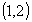
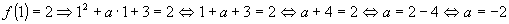
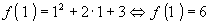

Item 01: Se o gráfico de  passa pelo ponto
passa pelo ponto

, então a = 2.Solução:
Se o ponto (1, 2) pertence ao gráfico de f(x) então suas coordenadas satisfazem a expressão de f(x), isto é:

Outra alternativa de solução é:
Calcule o valor de f(1) admitindo a possibilidade de a = 2.

Isto quer dizer que para a=2 o único ponto com abcissa 1 seria o ponto (1, 6), ou seja, o gráfico não passaria pelo ponto (1, 2), o que contrariaria a hipótese da questão. Portanto a conclusão é que a tem um valor diferente de 2.
Conclusão: O item 01 é falso.
 Voltar
Voltar